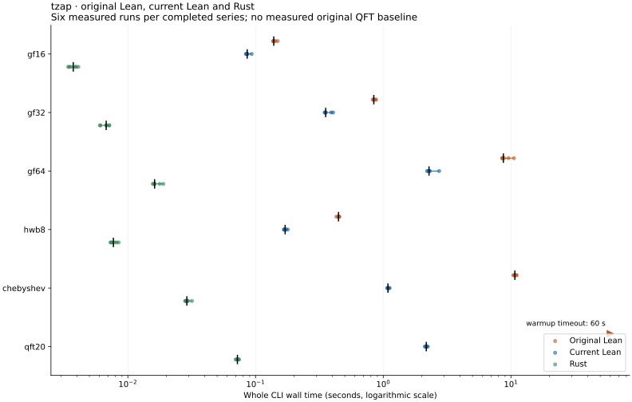

Fresh three-way comparison
Six measured observations per completed series, black median ticks, full ranges. Logarithmic seconds. The > marker is the original QFT 60-second timeout, not a completed sample or median.
Native CLI invocation through parsing, optimization, reporting, serialization, file write and exit, including harness bookkeeping; Lean also checks the serialization round trip · Fresh O1 campaign; baseline 2c29be4, current 26a4f17, Rust 26a4f17
Open / download artifact